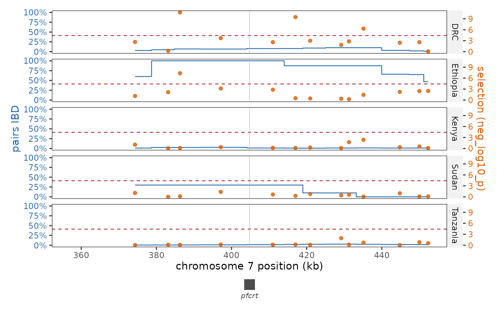

One locus in detail: IBD sharing against a selection scan
Source:R/plot_ibd_locus.R
plot_ibd_locus.RdA zoomed panel over a single interval with two vertical axes: the fraction of pairs sharing each SNP by IBD as a step curve on the left, and a per-SNP selection scan as points on the right, with a gene track underneath. Reading both signals against one another over a few hundred kilobases is what separates a shared haplotype that is also under selection from one that is merely common.
Usage
plot_ibd_locus(
x,
locus,
scan = NULL,
metric = "neg_log10_p",
groups = NULL,
pad = 0.1,
min_span = 50000,
threshold = NULL,
scan_abs = NULL,
size_by = NULL,
shape_by = NULL,
point_size = 1.4,
ibd_colour = "#2166ac",
scan_colour = "#d95f02",
gene_track = TRUE,
genes_for_track = NULL,
gene_label_angle = 0
)Arguments
- x
An IbdResults object (needs a per_snp_group table).
- locus
The interval to draw: a gene name from the object's track, a range (
"7:380,000-430,000"), a whole chromosome ("7"), or a one-row data frame with chr/start/end.- scan
Optional per-SNP scan for the right axis: a
run_ihs()result, abeta_score()table, or any table with chr, pos andmetric.NULL(default) uses the object's own IBD selection statistic.- metric
Column of
scanto draw (default"neg_log10_p").- groups
Optional groups to keep;
NULLdraws every group in the object.- pad
Context to add around
locus, clamped to the chromosome. One value pads both sides (default 10%); two pad the left and the right, either in that order or named –c(left = 5000, right = 40000), and naming only one side pads only that side. Each side is read on its own: below 1 it is a fraction of the interval's span, at or above 1 it is base pairs, soc(0.1, 20000)is legal.- min_span
Widen the window to at least this many base pairs (default 50 kb). A single gene padded by a fraction of its own length is usually too narrow to contain more than a handful of SNPs.
- threshold
Line(s) to draw on the scan axis: a height, or the name of a threshold the selection run wrote –
"bonferroni","fdr","permutation","empirical","both"or"all", the same vocabulary and coloursplot_selection_manhattan()uses, and per group where the run wrote one per group.NULL(default) draws the object's Bonferroni line, or the 1% tail when the right axis is an externalscan;NAdraws none. Naming a kind the run did not write is an error, and naming one at all needs the object's own statistic, since the threshold table says nothing about an external scan.- scan_abs
Plot the magnitude of a signed statistic.
NULL(default) takes the absolute value when the metric actually has negative values – iHS, Rsb, a z-score and beta are all read by distance from zero, and both tails mean selection – and labels the axis|metric|.FALSEkeeps the sign and extends the panel below zero instead, which is readable but means a point level with the IBD curve's zero is a value of zero rather than the floor of the axis.- size_by
Optional scan column to map to point size (e.g. a per-SNP allele frequency difference).
NULL(default) draws every point the same size.- shape_by
Optional scan column to map to point shape.
NULL(default) uses a mutation-class column (mutation_type,mutation_class,effect,consequence) if the scan has one, and plain points otherwise;NAnever maps shape.- point_size
Size of the scan points when
size_byis not used.- ibd_colour, scan_colour
Colours for the IBD curve and the scan points.
- gene_track
Draw the gene track under the panel (default
TRUE).- genes_for_track
Optional gene table for the track drawn under the panel (e.g. PF3D7_GENES), so every gene in the window is shown and named while the object's own track still supplies the marked positions inside the panel. Without it the track and the marks come from the same genes, which means marking a whole annotation just to see the neighbours.
- gene_label_angle
Rotation for the gene names in that track, in degrees.
0(default) centres each name under its gene;45or90runs it down to the left, which is what keeps long systematic ids from colliding over a dense annotation.
Value
A ggplot object, or a patchwork of the panel over the gene track when
gene_track = TRUE and the window contains genes.
Details
The two tracks keep their own units. The scan is drawn on the secondary axis, so a point and a curve at the same height are not the same number: compare shapes and positions, not heights.
Examples
x <- example_ibd_results()
plot_ibd_locus(x, "pfcrt", pad = 50000)
